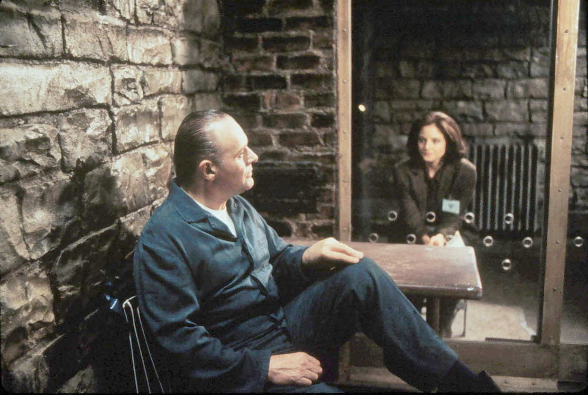

The Silence of the lambs (1991.)
What hasn’t been said about The Silence of the Lambs? To date, it remains the only horror movie to ever win the Best Picture Oscar,
but that might suggest more about the Academy Awards than it does the film. Even so, Jonathan Demme’s psychological horror remains
a classic that hasn’t aged a day.
The story, if you’re one of the lucky few who doesn’t know, involves a young but not naive FBI trainee
named Clarice Starling (Jodie Foster), who’s been tasked to tease and intrigue the mind of an incarcerated serial killer at the local mental
hospital: Dr. Hannibal Lecter (Anthony Hopkins in his most famous role). As it turns out, the not-so-good doctor holds the secrets that might
catch another serial killer (Ted Levine) before he skins his next victim. Yes,this is the movie that made Hannibal the Cannibal a pop culture
icon. But forget the sequels, prequels, or television spinoffs. Silence of the Lambs remains a singular, razor sharp thriller that cuts with
perfect precision through its story about troubled minds, the subtle menace of the patriarchy, and even an unlikely romance that is always divided
by a plane of glass. It’s a masterpiece.

 RETRO SCREEEAMS!
RETRO SCREEEAMS!